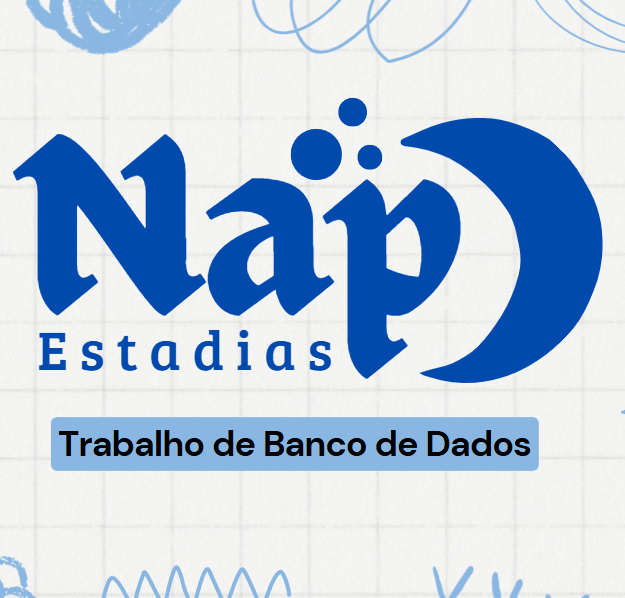
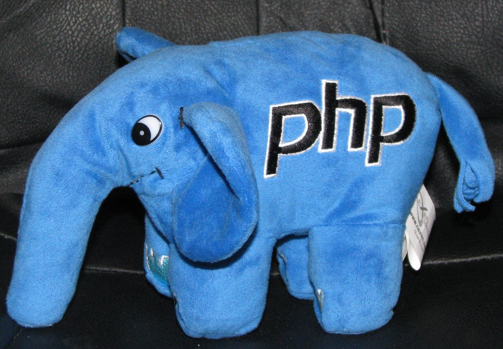
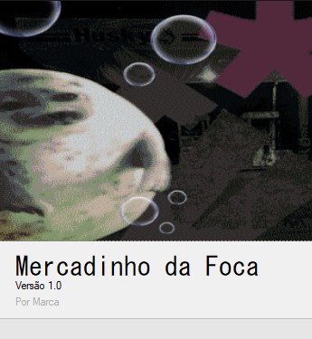
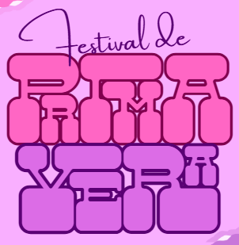

Acadêmico!
Nessa página, iremos explorar os principais projetos de cada ano até agora em que estudei na ETEC...
1°ANO
-
Projeto do jogo: Thoth's Journey
Esse foi o nosso maior projeto até agora, um jogo que envolvia quase todas as diciplinas do técnico como PW-1, APS, DD, TPA, etc. Ele durou o ano todo e foi praticamente o único.
O nosso jogo Thoth's Journey contava a história de um gato que lutava contra caçadores ilegais e libertava diferentes animais. Nós fizemos desde o storyboard até o design de todos os níveis até a divulgação.

Logo desenhada por mim.
Ele é um jogo estilo plataforma como o Mario, com alguns bosses e diferentes inimigos, além de cenários inspirados em paisagens das diferentes partes do continente africano (Onde o jogo se passa).
A equipe era composta por quatro membros, sendo eu um dos desenvolvedores. Aplicamos conceitos que viriam ser importantissemos para nós agora no TCC do Scrum, e colocar tudo que viamos em prática na hora no jogo ajudou muito a pegar o ritimo.

Thoth e o caçador.
Usamos as seguintes ferramentas: Game Maker, Aseprite, Libresprite, Trello, Canva, Instagram (Divulgação), Bandlab (Músicas), etc.
Github do projeto: Thoth's Journey
-
Nap Estadias: Projeto de Banco de Dados
Uma empresa hipotética que elaboramos com foco no banco de dados. Fizemos desde a indentidade visual, o wireframe, e o principal o banco de dados.

Logo do Nap.
Não foi tão extenso quanto o jogo mas também, por ser bem prático, treinou diversas habilidades nossas.
Ferramentas: Canva, Xampp, MySQL, MySQL Workbench, etc.
2°ANO
-
PW-2: Mini-CRUDs
Durante a aula de PW-2 fizemos varios mini-projetos focados principalmente no básico do PHP, então iniciamos fazendo um site para cada parte do CRUD básicamente.
Enquanto isso, o professor nós ensinou mais coisas sobre o HTML e CSS.

Elefantinho do PHP.
Alguns exemplos de projetinhos são: Gerenciador de veterinária, Gerenciamento de pedidos de pizzaria, etc.
-
C#: Sistema de Gerenciamento de Loja Completo
Semelhante ao jogo, trabalhamos esse sistema quase o ano todo. Trata-se de um sistema de estoque, com o CRUD inteiro feito em C# e Windows Forms para a aparência do APP.
Aplicamos finalmente alguns conceitos bem básicos de OPP (Programação Orientada a Objetos) e ao mesmo tempo aprendemos a sintaxe do C#!
No geral, apesar de desafiador em algumas partes, aprendemos como é o desenvolvimento desse tipo de aplicação.

Splash screen do meu APP, o nome da minha loja era esse.
Ferramentas utilizadas: Visual Studio 2022 e 2016, C#, Windows Forms.
-
Grêmio: Festival de Primavera
No segundo ano, eu fiz parte do grêmio estudantil, a chapa MAGIA. Eu atuei como gerente de mídia, e nosso principal projeto foi o festival.
Eu auxiliei em varias partes separadas do projeto, mas meu foco mesmo foi na indentidade visual, fazendo a logo, alguns posts, avisos e etc.

Logo do festival.
Além disso eu também ajudei em alguns trabalhos manuais como pintura, decoração, montagem da playlist, etc.
Ferramenta usada: Canva.
3°ANO
-
TCC: Em desenvolvimento!
Atualmente, o único projeto em andamento é o nosso TCC, estamos bem no inicio, no desenvolvimento da ideia, levantamento de requisitos, ferramentas que vamos usar e etc!
Assim que tivermos mais definido o site sera atualizado!